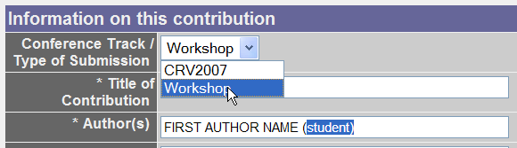

Tier I (IEEE archived) submissions. Papers due January 12
* The formatting and submission of final papers
accepted for publication within CVR proceedings have to follow exactly
the instructions provided at the CRV
website (click here)
* The Copyright form and the registration payment have to be
received for paper to be published.
1.a Requirements:
Blind review condition: VideoRec'07 reviewing is double blind:
authors do not know the names of the reviewers of their papers, and
reviewers do not know the names of the authors.
Dual submission : By submitting this manuscript to VideoRec'07,
the authors assert that it has not been previously published in
substantially similar form, and no paper currently under submission to
a conference contains significant overlap with this one.
Size and language: Papers should be written in English, complete,
and have
eight double-column pages maximum.
1.b Formatting:
Papers must be submitted in PDF format. For paper formatting
and submission,
follow the instructions
at
the CRV submission site. Please select "Workshop" as the option.
1.c Electronic submission:
Follow the instructions at the at the CRV
website
ATTENTION
AUTHORS:
1. Please make sure
that when submitting your paper via CRV web-site, you select
"WORKSHOP" from Type of Submission (as shown below).
2. Student Authors! To be eligible for the Best Student Award Paper, please
indicate that the first author is a student (as shown below) or simply
email to Program Chairs a note.

Tier II (CIPPRS Archived) submissions. Deadline: April 10, 2006
Submission instructions to be announced